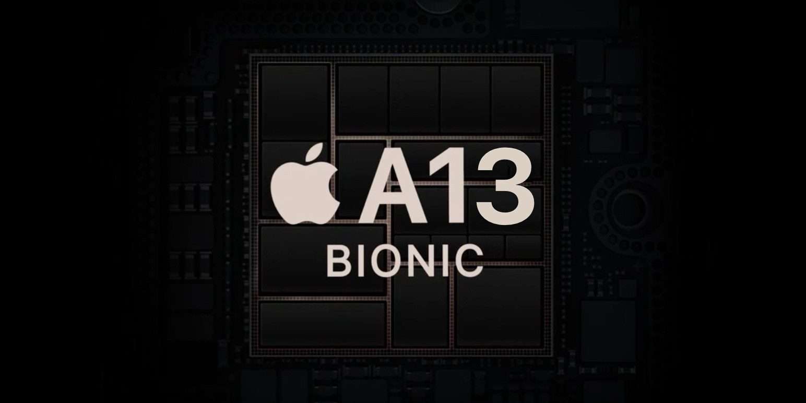

A12 Bionic APL1W81의 후속작으로 아이폰 11 | 11 Pro | 11 Pro Max과 함께 공개되었다. CPU는 Apple Lightning을 듀얼코어 구성으로 빅 클러스터를 이루고, Apple Thunder를 쿼드코어 구성으로 리틀 클러스터로 이뤄서 ARM big.LITTLE 솔루션을 적용한 HMP 모드 지원 헥사코어 CPU를 탑재했다. 전작인 A12 Bionic APL1W81과 비교할 때 빅 클러스터 기준 약 20%의 성능 향상과 약 30%의 전력 소모율 향상이 있으며 리틀 클러스터 기준 약 20%의 성능 향상과 약 40%의 전력 소모율 향상이 있다고 한다. GPU는 3세대 디자인 GPU 아키텍처를 쿼드코어 구성으로 탑재했다. 전작인 전작인 A12 Bionic APL1W81과 비교할 때 약 20%의 성능 향상과 약 40%의 전력 소모율 향상이 있다고 한다. 인공신경망 프로세서인 NPU는 애플의 3세대 디자인 Neural Engine을 옥타코어 구성으로 탑재했다. 이로 인해 생체인식 솔루션과 연계해 사용하거나 AI 성능을 별도로 처리한다. 메모리 컨트롤러도 탑재해서 LPDDR4X SDRAM, NVMe 규격을 지원한다. 이외에도 위상차 검출 AF를 지원하는 ISP를 탑재했다. 여기에 촬영 및 재생 등을 위한 여러 가지 코덱 및 컨트롤러 등을 탑재한 것으로 보인다. 생산 공정은 TSMC의 7nm FinFET Performance-Enhanced Version (ArFi) 공정이다. 벤치마크 결과의 경우, 해당 모바일 AP를 기반으로 한 개발 보드는 존재하지 않은 상황이다. 실제 탑재된 기기인 아이폰 11을 기준으로 할 때 CPU 성능은 Primate Labs의 Geekbench 4 기준, 싱글코어 점수가 약 5,400 점으로 측정되었고 멀티코어 점수가 약 13,800 점으로 측정되었으며 Geekbench 5 기준, 싱글코어 점수가 약 1,350 점으로 측정되었고 멀티코어 점수가 약 3,300 점으로 측정되었다. GPU 성능은 Apple Metal API로 측정되는 Primate Labs의 Compute Bench 기준, 약 29,000 점으로 측정되었다. Anandtech에서 A13을 분석한 결과 전작인 A12에 비해 클럭은 고성능 코어의 경우 6% 오른 2.66Ghz로 고효율 코어는 최대 12.3% 증가한 1.72Ghz로 작동한다고 밝혀졌다.[40] 특히 고효율 코어의 경우 전작인 A12보다 마이크로아키텍처에서 많은 부분이 변경되었는데 이로 인해 얻은 IPC 향상은 최대 38%라는 뛰어난 모습을 보여주고 있다. 이는 스냅드래곤 855에 탑재된 리틀코어인 Cortex-A55보다 2.5배에서 3배 성능이 뛰어나며 또한 A55보다 절반 이하의 에너지를 소모하는 결과를 보여준다고 한다.